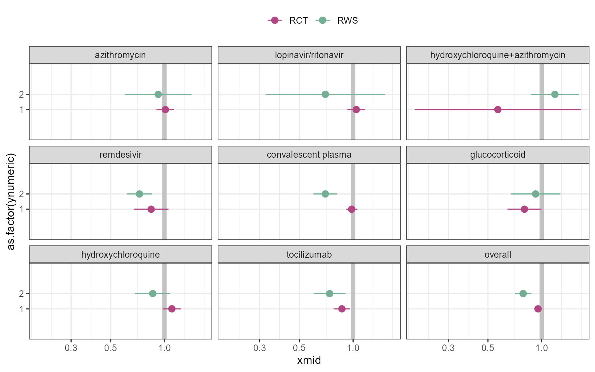

Code
library(tidyr)
library(dplyr)
require(ggplot2 )
library(patchwork)
library(ggquickeda)
library(ggh4x)
library(ggrepel)
library(scales)
figure2data <- read.csv("figuredata.csv")
figure2data$xmid <- exp(figure2data$est)
figure2data$xlow <- exp(figure2data$est - 1.96 *figure2data$se)
figure2data$xhigh <- exp(figure2data$est + 1.96 *figure2data$se)
figure2data <- figure2data %>%
mutate(midlabel = format(round(xmid,2), nsmall = 2),
lowerlabel = format(round(xlow,2), nsmall = 2),
upperlabel = format(round(xhigh,2), nsmall = 2),
LABEL = paste0(midlabel, " [", lowerlabel, "-", upperlabel, "]"))
figure2data$randomized <- figure2data$type
figure2data$ynumeric <- ifelse(figure2data$type =="randomized",1,2)
figure2data$facet <- as.factor(figure2data$facet)
figure2data$facet <- reorder(figure2data$facet ,figure2data$N)
figure2data <- figure2data %>%
arrange(facet,N)
figure2data$facetorder <- rep(1:9,each=2)
figure2data$randomized<- gsub(" ","~", figure2data$randomized)
figure2data$facet <- reorder(figure2data$facet ,figure2data$N)
figure2data$facet <- reorder(as.factor(figure2data$facet),figure2data$facetorder)
ggplot(figure2data)+
geom_vline(xintercept= 1,size=2,color="gray",alpha=0.9)+
geom_pointrange(aes(col=rct,
x=xmid,xmin=xlow,xmax=xhigh,
y=as.factor(ynumeric)),
position = position_dodge(width = 0.4))+
scale_y_discrete(expand = c(1,1,1,1))+
theme_bw()+
theme(strip.background = element_blank(),
strip.text.x=element_text(hjust=0,face="bold", color="#3764b0",size=12),
axis.title.y.left = element_blank(),
axis.text.y.left = element_blank(),
axis.ticks.y.left = element_blank(),
axis.title = element_text(size=14),
axis.text.x = element_text(size=12),
panel.background = element_rect(),
panel.grid.major = element_blank(),
panel.grid.minor = element_blank(),
axis.line.y.left = element_blank(),
legend.position = "none",
legend.position.inside = c(0.9,0.9)
)+
facet_wrap(~facet)+
labs(col="",fill="")+
scale_x_continuous("Odds Ratio of Death",
trans="log",
breaks= c(1/8,1/4,1/2,1,2),
labels= c("1/8","1/4","1/2","1","2"),
expand = c(0.4,0,0.4,0),limits = c(1/8,3)
) +
theme_bw()+
scale_color_manual(values=c("#b04782","#73ae95","#2297e6","#28e2e5"))+
scale_fill_manual( values=c("#b04782","#73ae95","#2297e6","#28e2e5"))+
facet_wrap(~facet)+
scale_x_log10()+
labs(col="",fill="")+
theme(legend.position = "top",y="")